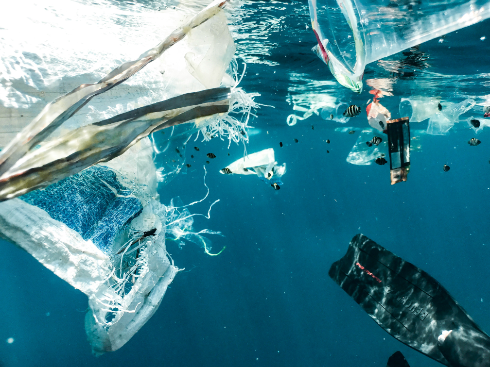
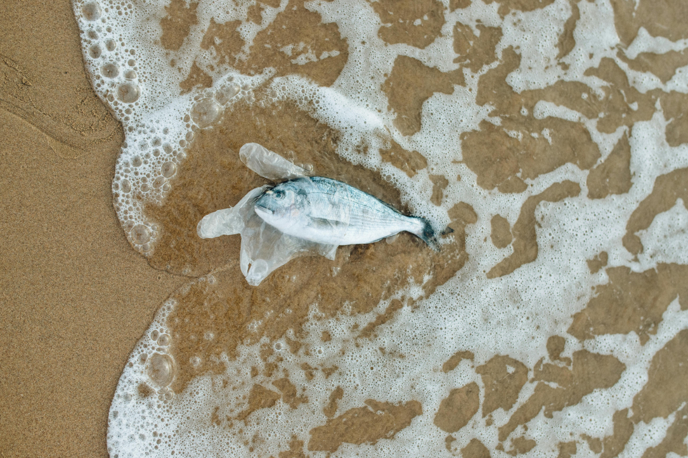
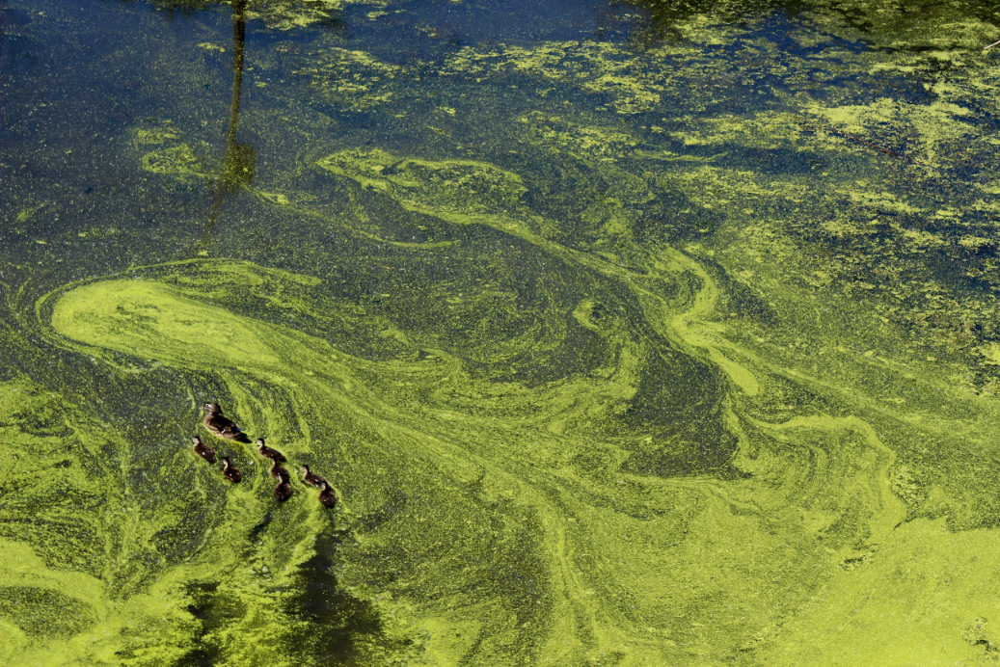
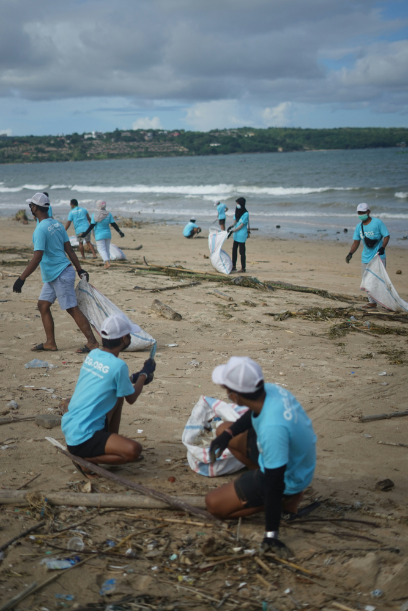

Ocean Pollution
Every minute, the equivalent of a rubbish truck full of plastic is dumped into our oceans. Ocean pollution is one of the most urgent environmental crises of our time and one that every person on the planet contributes to. This page explores what ocean pollution is, why it matters, and what you can do about it.
Introduction
Ocean pollution refers to harmful substances entering the sea including plastic, chemicals, oil, sewage, and noise. It comes from both direct dumping at sea and from land-based sources carried by rivers, wind, and rain. Around 80% of ocean pollution originates on land, meaning the choices we make every day from how we dispose of rubbish to what products we buy affect the health of our seas.
The scale of the problem is enormous. As of 2025, it is estimated that between 75 and 199 million tonnes of plastic waste are already sitting in our oceans, with millions more tonnes entering every single year. The ocean absorbs this pollution silently but the damage it causes to marine life, human health, and global ecosystems is anything but quiet.

Why It Matters to Students
You might think ocean pollution is a problem for coastal countries or future generations but it is already affecting the world you live in right now. Microplastics have been found in human blood, lungs, and even in unborn babies. The fish on your plate may contain traces of plastic. The water you drink and the air you breathe are not immune either.
By 2050, scientists predict there will be more plastic in the ocean by weight than fish unless we change course now.
Impact on Food and Health
Over 3 billion people rely on the ocean as a primary source of food. When the ocean is polluted, the fish and shellfish that billions of people eat absorb toxins and microplastics, which then pass into the human food chain. Persistent chemicals like PCBs and DDT do not break down they build up in animals and eventually reach us.
Economic Impact
Ocean pollution costs the global economy billions every year through damage to fisheries, tourism, and coastal industries. Beach pollution alone drives tourists away from coastal communities, hurting local economies that depend on clean seas.

Key Types of Ocean Pollution
Plastic Pollution
Plastic is the most widespread and visible form of ocean pollution. Around 11 million tonnes of plastic enter the ocean every year equivalent to 2,000 rubbish trucks being emptied into the sea every single day. About 80% of this comes from land-based sources, carried by rivers and drains. Once in the ocean, sunlight and waves break plastic down into tiny particles called microplastics, which are now found everywhere from the deepest ocean trenches to the Arctic ice. Over 800 marine species are harmed by plastic pollution, and 100% of marine turtles studied have been found to have plastic in their systems.
Chemical and Agricultural Runoff
Pesticides, fertilisers, and industrial chemicals wash off farmland and urban areas into rivers, eventually reaching the sea. When too many nutrients like nitrogen enter the ocean, they cause huge algae blooms that suck oxygen out of the water. This creates dead zones areas so low in oxygen that fish and other marine life simply cannot survive. There are now over 500 recorded dead zones around the world, up from just 146 in 2004.
Oil Pollution
While dramatic oil spills make the news, they actually account for only about 12% of the oil in our oceans. The majority comes from everyday runoff oil and fuel washing off roads, vehicles, and drains into rivers and eventually the sea. Oil coats the feathers of seabirds, clogs the gills of fish, and smothers coral reefs.
Noise Pollution
This is one of the least talked about forms of ocean pollution. Noise from shipping, military sonar, and offshore drilling disrupts the communication, navigation, and feeding of whales, dolphins, and other marine animals that rely on sound to survive. It can cause mass strandings and long-term stress in marine mammal populations.

Actions You Can Take as a Student
Ocean pollution can feel overwhelming, but individual actions genuinely do add up especially when they spread through communities and inspire others. Here are realistic things you can start doing right now:
In Your Daily Life
- Ditch single-use plastics carry a reusable bottle, bag, and coffee cup every day.
- Dispose of rubbish properly never leave litter near water, rivers, or drains.
- Never flush or pour chemicals down the sink medicines, paint, and cleaning products end up in waterways.
- Buy less plastic-packaged food oose fruit and vegetables, refill stores, and reusable containers all help.
As Part of a Community
- Join a beach or river clean-up local rivers carry plastic directly to the sea.
- Spread awareness share ocean pollution facts on social media or in your university community.
- Push for change at your university petition for plastic-free canteens or better recycling facilities.
Even if you live far from the coast, every drain and river connects to the ocean. What you put down the drain or drop on the street can end up in the sea.

Reasons for Hope
As bad as the situation is, there are genuine reasons for optimism. Governments, organisations, and individuals around the world are taking action and it is working in places.
The Ocean Cleanup Project
By 2024, The Ocean Cleanup organisation had removed over 10 million kilograms of plastic from oceans and rivers worldwide using their large-scale ocean cleanup systems and river interceptors. The project has shown that large-scale ocean cleanup is technically possible.
The UN Global Plastics Treaty
In 2022, the United Nations Environment Programme launched negotiations for a Global Plastics Treaty an international agreement aiming to end plastic pollution by 2040. This is considered one of the most significant environmental agreements since the Paris Climate Accord.
Single-Use Plastic Bans
The UK, EU, and many other countries have already banned or restricted a range of single-use plastics including straws, cutlery, and cotton buds. These bans are reducing the flow of some of the most common plastic pollutants into the ocean.
Get Involved
There are many organisations working to tackle ocean pollution that welcome student involvement:
- Surfers Against Sewage UK charity running beach cleans and plastic-free campaigns. sas.org.uk
- The Ocean Cleanup developing technology to remove plastic from the ocean. theoceancleanup.com
- Marine Conservation Society volunteer beach surveys, policy campaigns, and ocean advocacy. mcsuk.org
- UNEP Clean Seas Campaign global initiative to end marine litter. cleanseas.org
You can also explore your own impact using our Action Impact Simulator select the actions you already take or plan to take and see how your choices add up.
Try the Impact Simulator